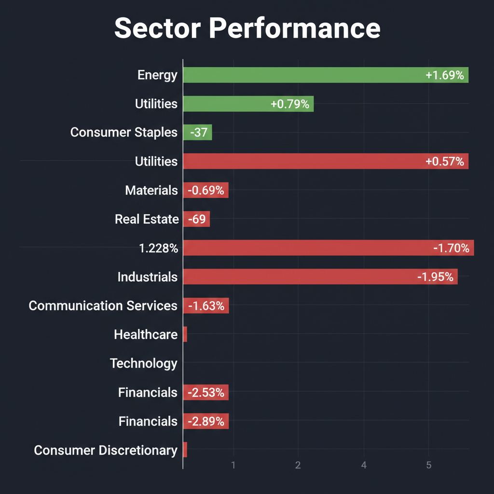
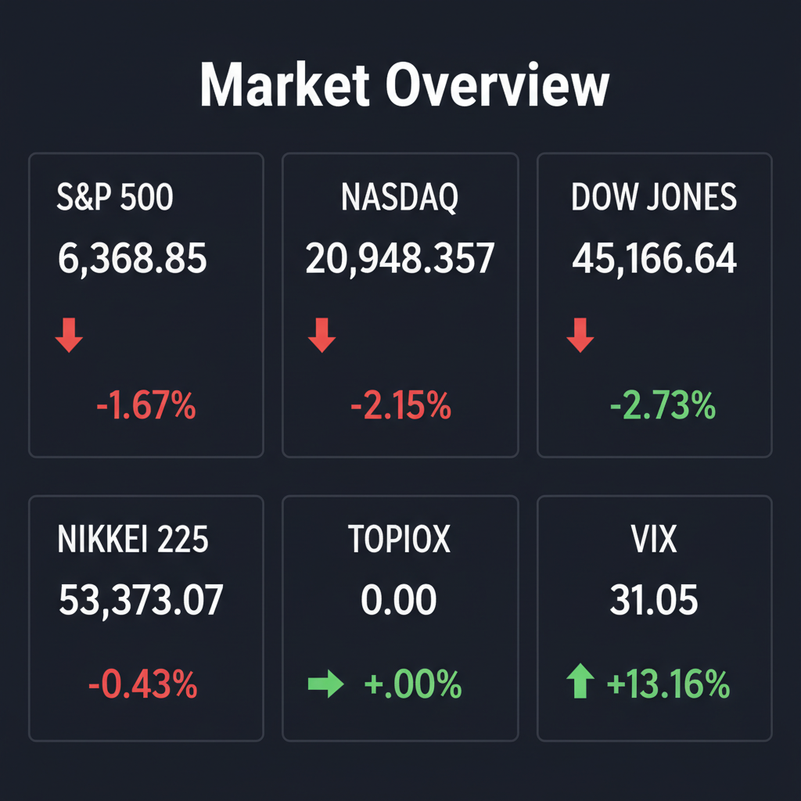

Daily Investment Report - 2026-03-30
Generated: 2026/3/30 8:15:39


投資チームミーティングでの議論を踏まえ、投資家向けの最終レポートを以下の通りご報告いたします。
1. エグゼクティブサマリー
- VIX指数が31を超える警戒水域に突入し、中東の地政学リスクと原油高を背景に、グローバル市場は明確な「リスクオフ（パニック）局面」にあります。
- インフレ再燃と景気減速が同時進行する「スタグフレーション」の懸念が高まっており、相場はハイテク・消費財からエネルギー・ディフェンシブ株へと強烈な資金シフト（セクターローテーション）を起こしています。
- 目先は「落ちるナイフ」を避けてキャッシュ比率を高める資産保全を最優先としつつ、パニック売りで不当に売り込まれた「強固な財務を持つ隠れた中小型成長株」の仕込み時を慎重に見極めるフェーズです。
2. 注目銘柄リスト
強気（買い推奨）
- Trupanion（TRUP） [時価総額: 約15億ドル]: 米国企業の間で「ペットのバックアップケア」を福利厚生に組み込む新たなトレンドが起きており、その恩恵を直接受けるペット保険SaaS企業です。不況下でも削られにくい非弾力的な需要と低い解約率を持ち、ディフェンシブな成長が期待できる秀逸な中小型株です。
- 日本ケミコン（6997） [時価総額: 約300〜400億円]: 直近で市場予想を上回る好決算を発表しました。PBR1倍割れという極めて厚い安全マージン（割安度）を保ちつつ、高付加価値製品へのシフトによる利益率の改善が顕著であり、相場の波乱時にも自律的な見直し買いが入りやすい銘柄です。
中立（様子見）
- レノバ（9519） [時価総額: 約1,000億円]: 中東リスクによる原油高騰を受け、日本の再エネシフトという国策の恩恵を受ける好決算銘柄です。しかし、初期投資が重いビジネスモデルのため、現在の金利高止まり局面ではバリュエーション低下のリスクも孕んでおり、打診買いにとどめるべきです。
- サイバーエージェント（4751） [時価総額: 約5,000億円]: 金融機関も注目する日本発IP・アニメ事業への本格参入は、将来的に莫大な成長ポテンシャル（TAM）を秘めています。ただし、全体相場のボラティリティが高いため、明確な底打ちシグナルを待ってからエントリーを検討してください。
弱気（警戒）
- ソフトバンクグループ（9984） [時価総額: 約14兆円]: わずか3ヶ月で有利子負債を4兆円増加させ、OpenAI等へ巨額出資を行っています。金利上昇と歴史的円安が同時進行する環境下での過剰なレバレッジAI投資は、極めて高い財務リスク（和製ブラックスワンの火種）を抱えています。
- アスクル（2678） [時価総額: 約2,000億円]: 経常赤字220億円への転落が報じられています。物流「2024年問題」や人件費高騰による構造的なコスト増が利益を激しく圧迫しており、株価が下がっても手を出してはいけない「バリュートラップ」の典型です。
- McCormick（MKC） [時価総額: 約200億ドル]: 米国食品業界の成長鈍化を補うため、リスクの高い大型買収（M&A）に走る姿勢を見せており、今後の財務悪化や統合リスクが強く懸念されます。
3. セクター推奨ランキング
- 1位：エネルギーセクター（地政学リスクの直接的なヘッジとして機能し、原油高モメンタムの恩恵を享受できる唯一の強気セクター）
- 2位：生活必需品セクター（高いインフレ耐性を持ち、同業種内でも価格転嫁力を持つ優良企業へ逃避資金が流入するディフェンシブ領域）
- 3位：公益セクター（景気後退懸念とボラティリティが高い相場において、安定したキャッシュフローが評価される安全地帯）
- 最下位（回避）：一般消費財・高レバレッジテクノロジー（エネルギー高による消費マインドの悪化と、金利高止まりによるバリュエーション低下の直撃を受けるため、最も警戒が必要）
4. 今週の注目イベント
- 今週（日付未定）：米国雇用統計（Jobs data）の発表（米国の景気動向と、今後のFRBの利下げパス・金融政策を決定づける最重要指標）
- 今週（日付未定）：Nike（NKE）の決算発表（消費者の購買力低下を測る先行指標、および一般消費財セクターの方向性を決める重要イベント）
5. リスク要因
- スタグフレーション・ショックと流動性枯渇：原油高による「インフレ再燃」と雇用悪化に伴う「景気減速」が同時進行し、FRBが身動きを取れなくなることで、株式のみならず全リスク資産から資金が流出するリスク。
- 円キャリートレードの強烈な巻き戻し：1ドル160円台の歴史的円安に対し、日銀のタカ派シフト（早期追加利上げ）や政府の直接的な為替介入が行われた場合、急速な円高反転が日米の株価急落（フラッシュ・クラッシュ）の引き金となるリスク。
- 過剰レバレッジ企業の信用不安：高金利下で無理なM&Aを行う成熟企業や、巨額の有利子負債を抱えてAI投資を強行する企業から、連鎖的なクレジット・イベント（信用収縮）が勃発するリスク。
6. アクションアイテム
- キャッシュ比率の劇的な引き上げ：全ポートフォリオの株式エクスポージャーを即座に縮小し、現金（キャッシュ）比率を最低でも40〜50%まで引き上げ、まずは資本の保全を最優先してください。
- 「落ちるナイフ」を絶対に掴まない：VIXが30を超えるパニック相場での安易な押し目買いは厳禁です。RSIなどの指標だけでなく、出来高の急増を伴う明確なセリングクライマックス（底打ちシグナル）を確認するまで、新規の買いエントリーは控えてください。
- ディフェンシブシフトとヘッジの実行：保有ポジションを一般消費財や大型ハイテクから、エネルギーや生活必需品へとローテーションさせてください。可能であれば、主要指数のインバース型ETF等を活用したテールリスク・ヘッジの導入を検討してください。
- 選別した中小型株のウォッチリスト化：マクロのパニック売りが落ち着いた後に最大の反発を見せるのは、Trupanionや日本ケミコンのような「強固なバランスシート・安定したキャッシュフロー・明確な成長カタリスト」を持つ中小型株です。今は買わず、監視リストに入れてタイミングを待ってください。